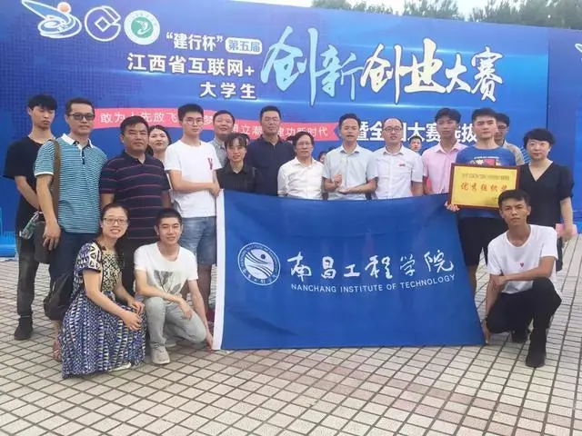

张雯雯：研途有道，聊聊考研那些事
本文最后更新于：2 天前
在这个特殊的春天，因为突如其来的疫情，正在考研备战的同学们，都在家中默默努力，为自己的梦想而奋斗。考研是一项系统工程，备考路上有许多问题和困难需要大家去面对和解决。那么今天，老师就想利用这堂课跟大家来聊一聊考研那些事。
2020年考研初试已经结束两个月了，刚刚经历过考研以及正在备考的同学经常会讨论一个话题：“努力”与“选择”哪个更重要。有些人认为努力更重要，因为他们知道只有努力才能给自己创造选择的机会。而认为选择比努力重要的同学觉得选择一个能力范围内的学校，会很大程度上增加成功“上岸”的机会。接下来我们就考研过程中的努力与选择作一些探讨。
“努力”与“选择”缺一不可
“努力”为“选择”提供最肥沃的土壤
同学们，越努力越幸运！人的一生中，许多选择确实能改变人生的走向，但这些转机大部分都来源于过往的积累。所谓人生开挂，不过是厚积薄发。而如果你也想考研成功，那应该做哪些努力呢？
第一,提高自我认知，做好职业生涯规划。同学们，在平时，大家要不断提高自我认知，认清自己的性格特点和气质类型，了解自身优势，以便在选择考研专业时扬长避短。根据对自我的认知，判断自己的发展取向，做好职业生涯规划，明确发展目标，以便选择适合个人需求的考研院校。
（图片来源：京师博仁官网）
第二，养成良好的学习习惯，收获一张“漂亮”的成绩单。一方面良好的学习习惯将使我们受益终身，另一方面努力学好基础科目和专业课程，将为我们后期的考研复习打下坚实的基础。同时，本科成绩单是复试需要提供的一项材料，“漂亮”的成绩单一定程度上反映了同学们扎实的专业基础和突出的学习能力，这对大家非常重要。
（图片来源：搜狐号新东方在线）
第三,做好阶段性学习规划，完成近期学习目标。同学们，大家在不同阶段会面临不同的学习任务，也会为自己设定阶段性学习目标，如期末考试获得奖学金、学会一门计算机语言、掌握一种专业软件、通过英语四六级考试等等。为了达成这些阶段性学习目标，同学们应该提前做好合理的规划，并付诸实施。
（图片来源：一起QQ网）
第四,做好长期学习规划，实现厚积薄发。同学们，学习和掌握知识，做到活学活用都是慢功夫，成绩提升不会一蹴而就。因此，大家必须持之以恒，做好长期学习的规划。以英语为例，建议大家每天利用碎片化的时间背单词，扩大英语词汇量，看看英语杂志、浏览英文网站以提高自己的阅读能力。
（图片来源：瑶湖学院“私人订制”打卡群）
第五，积极参加科技创新活动，提高核心竞争力。研究生阶段的学习是一个将理论学习转化为实践的过程，其表现即为对科研的重视，将学习知识和科学研究二者紧密结合。基于此，很多学校和导师在复试时都很看重学生本科阶段的科研经历。某些考生在本科阶段曾参与过科研训练项目、科技竞赛，发表过论文或申请过专利，面试的导师一般对此会很感兴趣。这些都是核心竞争力的体现，也都会为复试成功增添筹码。

（图片来源：南昌工程学院官网）
“选择”使“努力”开出最美的花
同学们，相信大家都有过这样的经历，准备考研时，学长学姐都会告诉你，择校一定要慎重，选择大于努力！并且每年复试结束之后，很多考生也都会感慨选择大于努力，因为分数比自己低的同学上了不错的学校，自己分数挺高但一志愿没过线四处求调剂……
选择院校应考虑的因素

同学们在对目标院校和专业充分了解的基础上，可以对两者分别进行归类，做个简单的二分法。
接下来，我们将院校和专业进行组合：顶尖院校&顶尖专业、顶尖院校&一般专业、一般院校&顶尖专业、一般院校&一般专业。当然，“双顶尖”的竞争自然是最激烈的，如果自身实力够强，可以一搏；如果自身实力一般，那就考虑下“一般加顶尖”的组合；如果自身实力较弱，那就考虑下“双一般”了。
自律与环境同等重要
自律，是考研成功的关键
同学们，大家每次打开手机上的keep软件，都会发现“自律给我自由”几个字映入眼帘。何为自律？自律就是在没有人现场监督的情况下，通过自己内在要求，变被动为主动，自觉地遵循法则，拿它来约束自己的一言一行。自律的人有很强的自控能力、执行力，能够严于律己，养成良好的习惯并日复一日地坚持。
好队友，是神一样的“助攻”
同学们，如果下定决心要考研了，找几个志同道合的研友组建团队，是非常有必要的。大家知道吗，每年我校都会涌现一些“学霸考研寝室”。如我校14级土木工程（卓越计划）班刘火兴、王亚东和康轶涛和15水利水电工程1班龙星羽、龙思琪、涂静婷、余玮平都是学霸寝室成员。这些成功考进心仪院校的学霸们有没有让大家羡慕不已?为什么他们宿舍都这么厉害?也许，余玮平学姐的回答可以告诉大家答案，“我们一起奋斗，可以相互交流学习，也可以互通信息，最重要的是能够彼此鼓励和支持。考研是一条布满荆棘的小路，沿途或许大雾弥漫，有时让人辨不清方向，还好有她们的陪伴让考研之路从此不孤单。”
好环境，是最优质的“赛道”
荀子曰：“蓬生麻中，不扶自直。白沙在涅，与之俱黑。”的确如此，环境对人的影响力是非常巨大的。在考研过程中，我们或多或少也会受到环境的影响。试想，宿舍学习氛围浓厚，你与室友间相互鼓励督促，那不失为优良学风寝室的典范，有望冲击新一届的“学霸考研寝室”。如果你正在寝室里刷题，而室友们在打游戏、追剧，你又如何能保持平静的心态来学习呢？这时，你不妨走出寝室，走进图书馆，走进自习室，走进考研的大环境中。其实很多时候大家不是输在起跑线上，而是输在了赛道的选择上。
困难与收获并行同在
做难事必有所获
考研作为一种选拔性考试，注定了是一场硬仗，它要求我们在一段有限的时间里，尽可能快速地精进自己的学习技能，还要不断磨炼自己的心智，防止可能陷入的“情绪”漩涡。这是同习惯、耐受力和外部诱惑的角力，不仅检验自己的学习能力，更是对强大内心和坚定信念的一次深刻考验。而考研这样一场艰苦又充满挑战的全方位历练，带给我们的认识和体验，是仅仅坐在课堂上学习、按部就班完成学业永远不可能获得的。做难事是最有效的耕耘，也必将带来最丰厚的收获。
考研收获的不仅是结果，还有过程
今年的考研初试成绩已经公布，同学们还要面对随之而来的各种选择与考验。无论“梦圆”“梦碎”，大家都将带着对未来美好的期许，进入“努力”与“选择”的下一个轮回。
而考研留给亲历者的烙印将一直存在……
考研造就一种心境——心无旁骛
考研成就一种态度——勇往直前
考研铸就一种精神——坚韧不拔
结语
同学们，我跟大家一样，都选择走上了考研这条陡峭的爬坡路，并且顽强地走完了全程。每每回望考研的历程，都不禁会怀念那段心中有梦想、脚下有力量的时光。
记忆共通所以共鸣，拥有情怀所以感动。课堂的最后，跟同学们分享B站跨年晚会上五月天的《倔强》，为每一位选择倔强坚持的人高歌。
（视频来源：哔哩哔哩，剪辑：吃白饭 )
本博客所有文章除特别声明外，均采用 CC BY-SA 4.0 协议 ，转载请注明出处！